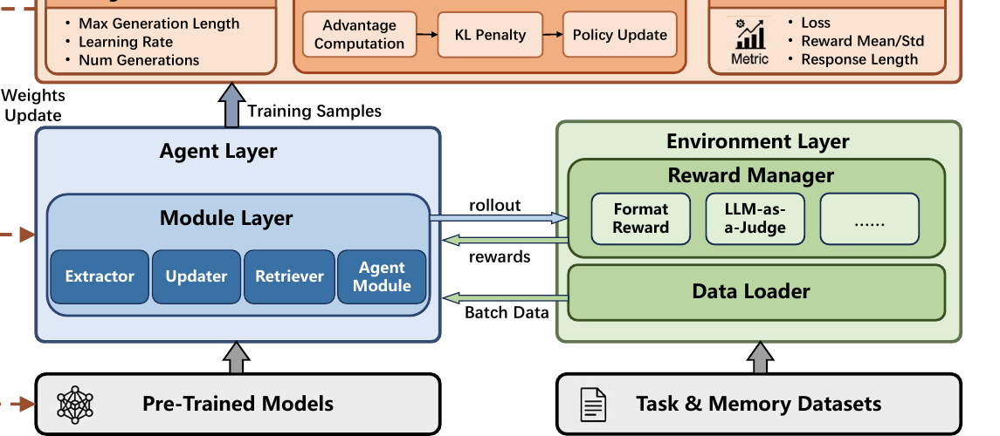

MemFactory 深度解读
MemFactory 不是新的记忆算法，而是把 Memory-RL 研究中分散的 extraction、updating、retrieval、agent rollout、environment reward 和 trainer 统一成可插拔训练/推理框架。
1. 设计思路：为 Memory-RL 建一套“实验操作系统”
Memory-R1、RMM、MemAgent 都证明了 RL 可以优化记忆行为，但每篇论文都有自己的数据格式、rollout、reward 和训练脚本。MemFactory 的贡献是把这些共性抽成统一框架，降低复现和组合成本。
2. 论文原图框架：Figure 1 的四层架构

论文 Figure 1：MemFactory 的 Module、Agent、Environment、Trainer 四层及其数据、reward、权重更新关系。
3. Module Layer：统一 generate / rollout / inference
论文 Table 1 把模块接口标准化。这个设计让不同 memory 方法可以共享训练框架，同时保持训练和推理语义清晰。
| 接口 | 模型 | Reward | 作用 |
|---|---|---|---|
generate | Training Model | Deferred | 产生中间状态，奖励等完整交互或轨迹结束后再分配。 |
rollout | Training Model | Final reward | 产生完整轨迹，接受最终任务级奖励。 |
inference | Inference Model / APIs | None | 只推理，不参与训练。 |
4. 它如何容纳三类 Memory-RL 论文
Memory-R1
结构化 ADD/UPDATE/DELETE/NOOP 更像 updater/manager module，environment 用 QA 正确性给 reward。
RMM
Retrospective Reflection 对应 rerank retriever，LLM citation signal 可以作为 reward 更新 reranker。
MemAgent
流式 overwrite memory 对应 agent module 或 recurrent memory module，rollout 跨多个 chunk。
5. 实验怎么读：框架有效，但不是新 SOTA 算法本身
| 设置 | 论文报告 | 含义 |
|---|---|---|
| 验证对象 | 论文使用公开 MemAgent 架构及其训练/评测数据进行实证。 | 说明框架可以跑通复杂的 recurrent memory policy，而不只是抽象图。 |
| Qwen3-1.7B | 平均分相对提升 14.8%，但 OOD benchmark 略降。 | 小模型主任务收益明显，迁移稳定性仍有限。 |
| Qwen3-4B-Instruct | 平均相对提升 7.3%，包括 OOD benchmark 的一致提升。 | 更大模型更稳地转移 learned recurrent memory policy。 |
| 硬件 | 论文描述可在单张 NVIDIA A800 80GB 上运行相关训练评测。 | 框架降低门槛，但仍不是低资源零成本训练。 |
6. 工程启发与边界
适用
研究团队要复现、比较、组合多种 Memory-RL 方法，或在同一环境中替换 extractor/updater/retriever。
边界
论文承认当前覆盖的代表范式有限，训练效率仍有改进空间；它也不是用户级记忆产品。
来源与核验边界
本页依据 arXiv:2603.29493 与可访问 GitHub 仓库整理。计划中提到的 xiaomi-research/memfactory 链接不可访问，本页使用论文 PDF 中给出的 MemTensor/MemFactory。